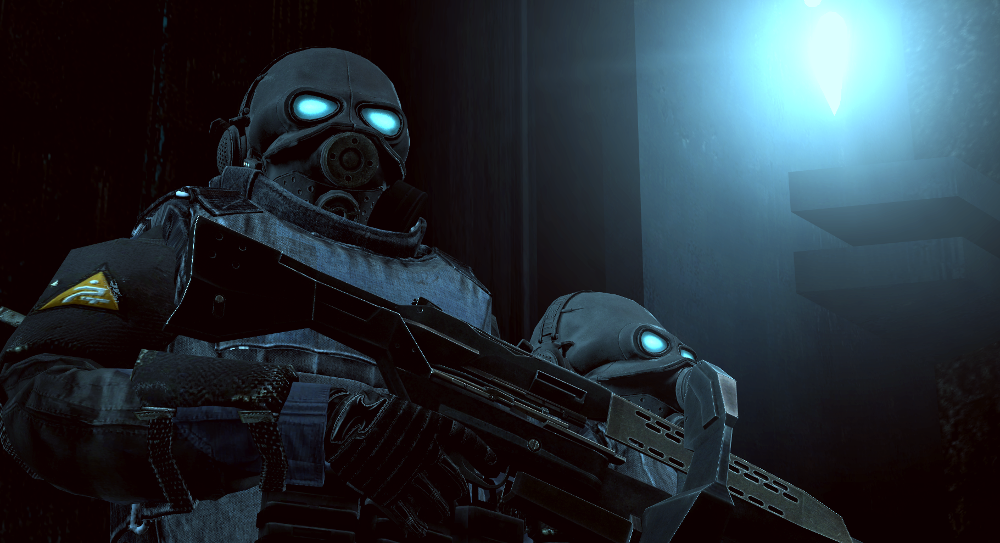

Overwatch
O Braço Transumano da Overwatch é a força militar humana dos Combine. Quase nunca vista, mas pronta para se mobilizar a qualquer momento, essa força de elite composta por soldados aumentados existe para suprimir ameaças à estabilidade regional com eficiência calculada e brutal.
Regras
A menos que indicado de outra forma, todas as regras e procedimentos da Proteção Civil também se aplicam à Overwatch. Quebrar qualquer uma dessas regras pode resultar em blacklist e banimento do servidor para ambas as whitelists.
0. Use o bom senso. Abuso claro da whitelist ou qualquer tipo de brincadeira resultará em banimento permanente.
1. Você é um ativo militar aprimorado e treinado, mais soldado do que humano, cuja única razão de existir é a preservação do status quo dos Combine. Suas ações, palavras e comportamento devem refletir isso, caso contrário, você será removido.
2. Não há disciplina interna para soldados da Overwatch. Se você cometer erros, será removido da facção. Da mesma forma, se você não concordar com o que o líder da sua equipe está dizendo, guarde para si.
3. Não interfira nos assuntos da Proteção Civil, a menos que esteja cumprindo uma ordem da Central ou do comando local da Overwatch.
Comportamento
| FORÇAS DA OVERWATCH | |
| Overwatch | |
|  | |
| Uma força militar ciberneticamente aprimorada e com capacidades cognitivas substituídas, implantada para preservar a integridade urbana quando todas as outras opções falharam. |
Esta facção é reservada para aqueles que conseguem manter uma presença séria e intimidadora diante do público; lembre-se de que o Braço Transumano é a força terrestre mais organizada e disciplinada da Overwatch.
Soldados da Overwatch utilizam terminologia verbal nas comunicações por rádio em vez de códigos numéricos. Siga os padrões de fala apresentados no universo de Half-Life 2, especialmente ao interagir com cidadãos, usar o mínimo de palavras e manter as ordens de forma clínica e direta ajuda a distanciar os soldados da força de trabalho comum. Muitas vezes, menos palavras transmitem muito mais.
Implantação
Soldados da Overwatch são muito mais imponentes quando aparecem como uma força raramente vista, somente quando a situação se torna crítica. Por isso, há diretrizes extremamente rigorosas sobre quando os jogadores podem "logar" com seus personagens da Overwatch.
Durante esses períodos, os soldados podem realizar amputações imediatas e sumárias em violadores com NÍVEL DE ATIVIDADE ANTI-CIVIL CINCO ou superior, desde que isso não contradiga as regras da facção.
Qualquer implantação deve ser feita em um grupo de pelo menos 2 unidades da Overwatch, e em conformidade com as diretrizes listadas abaixo. Além disso, o número de unidades em operação nunca deve exceder os limites da tabela ao lado.
Ativos Prioritários
Membros do Conselho de Segurança da Cidade 11 devem, ocasionalmente, interagir com a população geral. Como soldados da Overwatch, é seu dever preservar a integridade desses ativos durante essas incursões, o que inclui:
| Índice de Estabilização | Máximo de unidades OW |
| Preservado | 2 |
| Marginal | 2 |
| Fraturado | 4 |
| Isenção de Julgamento | Ilimitado |
- Estar constantemente armado e pronto para defender ou se colocar na linha de fogo pelo ativo prioritário.
- Em situações onde o ativo prioritário esteja em risco indevido, é perfeitamente apropriado ignorar ordens que aumentem esse risco, priorizando movê-lo para um local seguro.
- Permanecer vigilante e antecipar possíveis rotas de fuga ou fontes de ataque.
- Manter membros da força de trabalho suprimidos ou afastados do ativo.
- Cidadãos que não obedecerem a uma única ordem para recuar devem ser expurgadoss da força de trabalho.
Como um ativo militar dos Combine, você não é obrigado a cumprir quaisquer ordens em nome do ativo prioritário, exceto garantir sua segurança e executar as diretrizes da Overwatch emitidas por uma fonte da administração setorial ou pela Central.
Estabilização
Soldados da Overwatch podem ser implantados para estabilizar insurreições locais em todo o distrito quando o Índice de Politi-Estabilização estiver FRATURADO ou pior.
Isso pode envolver uma busca sistemática e a inoculação do Sistema de Drenagem, somente sob uma ISENÇÃO DE JULGAMENTO
Controles Importantes
F1: Abre o menu de interação
F2: Abre o PDA
/tac <mensagem>: Envia uma mensagem para todas as forças Overwatch e oficiais da administração
/ow <mensagem>: Envia uma mensagem nas comunicações principais da Overwatch
/ep <mensagem> Envia uma mensagem para sua equipe de estabilização
/codigo1: Cria um ponto de referência gerall
/codigo2: Cria um ponto de referência de CÓDIGO 2
/codigo3: Cria um ponto de referência de CÓDIGO 3
/chutarporta: Arromba a porta em que você está olhando
/golpear: Deixa inconsciente o personagem que você está olhando com a coronha da sua arma